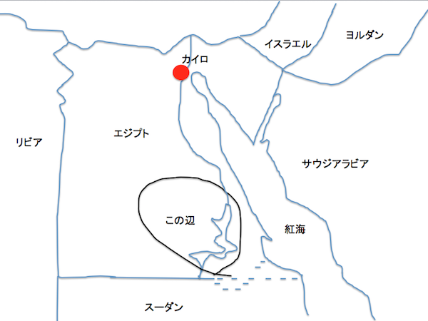

基本情報
アブ・シンベルからフィラエまでのヌビア遺跡群（Nubian Monuments from Abu Simbel to Philae）は、エジプト南部のナイル川流域にある、古代エジプト文明の遺跡。1960年代、エジプトでナイル川流域にアスワン・ハイ・ダムの建設計画が持ち上がったが、このダムが完成すると、ヌビア遺跡が水没する危機が懸念された。これを受けて、ユネスコが、ヌビア水没遺跡救済キャンペーンを開始。世界の60ヶ国の援助により、技術支援、考古学調査支援などが行われた。これがきっかけとなり、開発から歴史的価値のある遺跡、建築物、自然等を国際的な組織運営で守ろうという機運がうまれ、1972年11月16日、ユネスコのパリ本部で開催された第17回ユネスコ総会で、世界の文化遺産および自然遺産の保護に関する条約（世界遺産条約）が満場一致で成立。1975年、20ヶ国が条約締結し正式に発効した。ヌビア遺跡群も1979年、世界遺産（文化遺産）に登録された。（Wikipediaより引用）
もっと詳しい情報はこちら！
動く絵本（アブ・シンベル神殿発見の経緯）
ー1800年ごろ、エジプト南部、アスワン地方
参考文献、URL
- ジャン・ベクテール．古代エジプト探検史．第11版，創元社，1990，235p，（日本語），（単行本），メディアセンター，2016-7-7